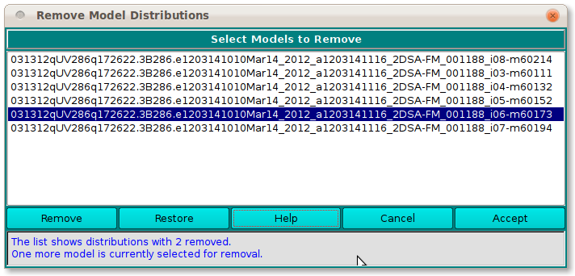

UltraScan Remove Model Distributions:
The dialog presented when a US_RemoveDistr is executed shows a
list of loaded models. By selecting items in this list and clicking
on a Remove button, you can remove models from the original
distribution list. After all the desired removals have been performed,
an Accept button passes the reduced model data to the caller.
|

|
-
(list) The list box is initially populated with a passed
list of all loaded models. Individual or multiple item lines
can be selected for removal.
-
Remove After making selections, click this button
to remove selections from the list.
-
Restore Click on this button to restore the list to
its original full-list state.
-
Help Click to bring up this documentation.
-
Cancel Click to close the dialog with no model list
modifications made.
-
Accept Click to accept the modified list as it appears
and pass it back to the caller.
-
(status) The ongoing status of the list and current
selections is documented here.
|
 Manual
Manual